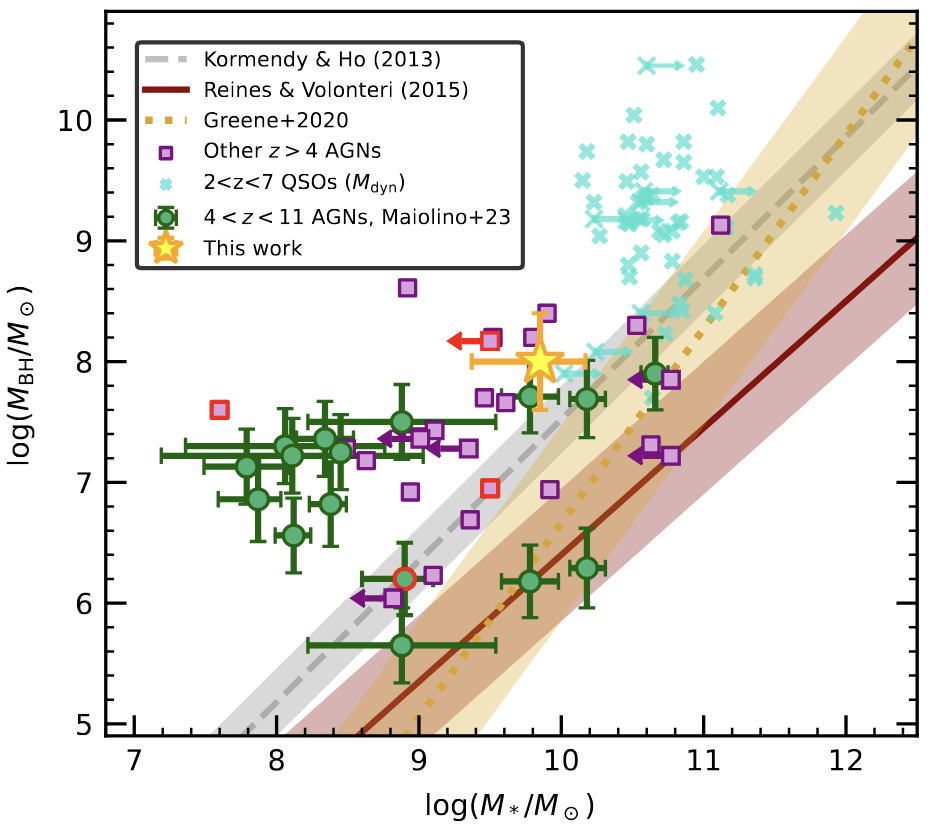
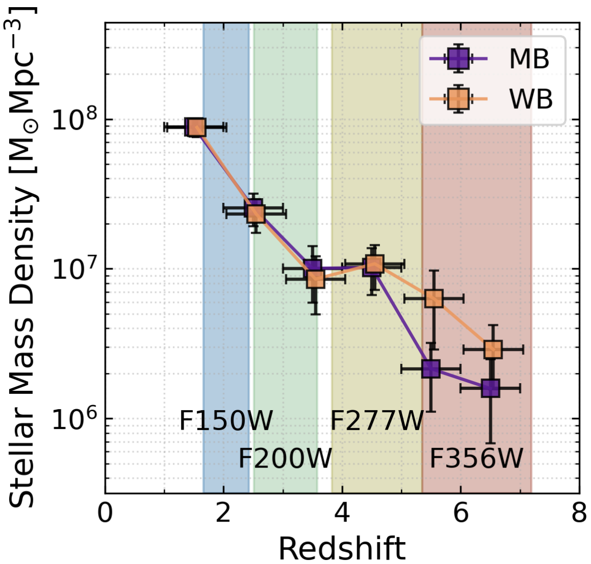
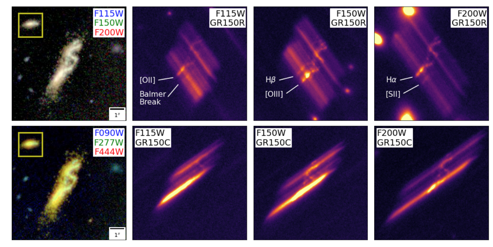

CANUCS/Technicolor: JWST Medium Band Photometry Finds Half of the Star Formation at z>7.5
is Obscured
In Search of the First Stars: An Ultra-Compact and Very Low Metallicity Lyman-α
Emitter Deep Within the Epoch of Reionization
Possible environmental quenching in an interacting LRD pair at z∼7
Resolved mass assembly and star formation in Milky Way Progenitors since z=5
from JWST/CANUCS: From clumps and mergers to well-ordered disks

Red, hot, and very metal poor: extreme properties of a massive accreting black hole in the first 500 Myr
Improving photometric redshifts of Epoch of Reionization galaxies: a new transmission curve with the neutral hydrogen damped Lyα
absorption
Detailed Study of Stars and Gas in a z = 8.3 Massive Merger with Extreme Dust Conditions
CANUCS: UV and ionizing properties of dwarf star-forming galaxies at z 5-7
When, where, and how star formation happens in a galaxy pair at cosmic noon using CANUCS JWST/NIRISS grism spectroscopy
CANUCS: Constraining the MACS J0416.1-2403 Strong Lensing Model with JWST NIRISS, NIRSpec and NIRCam
CANUCS: An Updated Mass and Magnification Model of Abell 370 with JWST

CANUCS: Constraining the MACS J0416.1-2403 Strong Lensing Model with JWST NIRISS, NIRSpec and NIRCam
CANUCS: An Updated Mass and Magnification Model of Abell 370 with JWST

Exposing Line Emission: A First Look At The Systematic Differences of Measuring Stellar Masses With JWST NIRCam Medium Versus Wide Band Photometry
Modelling and Subtracting Diffuse Cluster Light in JWST Images: A Relation between the Spatial Distribution of Globular Clusters, Dwarf Galaxies, and Intracluster Light in the Lensing Cluster SMACS 0723
A Steep Decline in the Galaxy Space Density Beyond Redshift 9 in the CANUCS UV Luminosity Function
ΛCDM Not Dead Yet: Massive high-z Balmer break galaxies are less common than previously reported
Bursty Star Formation and Galaxy-Galaxy Interactions in Low-Mass Galaxies 1 Gyr After the Big Bang
Star Formation at the Epoch of Reionization with CANUCS: The ages of stellar populations in MACS1149-JD1

Spectroscopy from Photometry: A Population of Extreme Emission Line Galaxies at 1.7 ≲ z ≲ 6.7 Selected with JWST Medium Band Filters
A First Look at Spatially Resolved Balmer Decrements at 1.0 < z < 2.4 from JWST NIRISS Slitless Spectroscopy
An Extremely Compact, Low-mass Galaxy on its Way to Quiescence at z = 5.2
JWST catches the assembly of a z ∼ 5 ultra-low-mass galaxy

The first large catalogue of spectroscopic redshifts in Webb’s First Deep Field, SMACS J0723.3−7327

The Sparkler: Evolved High-redshift Globular Cluster Candidates Captured by JWST

The Near Infrared Imager and Slitless Spectrograph for the James Webb Space Telescope -- II. Wide Field Slitless Spectroscopy